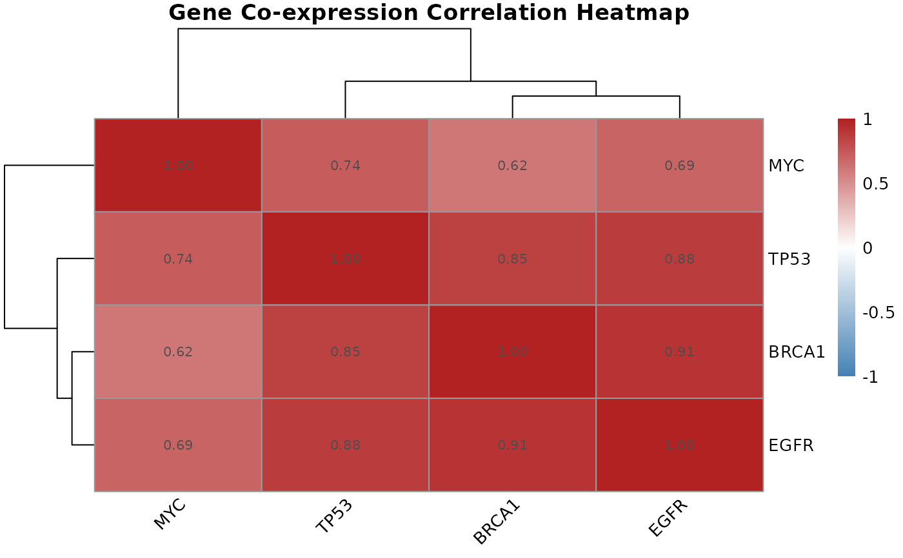

Visualizes a gene-by-gene correlation matrix as a clustered heatmap, revealing groups of co-expressed genes within a candidate gene set.
Arguments
- cor.matrix
Numeric matrix as returned by
gene.correlation.matrix(). Must be square and symmetric with row/column names corresponding to probe IDs.- gene.names
Character vector of gene names to use as axis labels in place of probe IDs. Must be the same length and order as
cor.matrixrows. Default isNULL, which uses probe IDs.
Value
A pheatmap object displaying the correlation matrix with
hierarchical clustering applied to both rows and columns. Color scale
runs from blue (strong negative correlation) through white (no correlation)
to red (strong positive correlation).
Details
Hierarchical clustering of the correlation matrix groups genes with similar
co-expression patterns into visible blocks on the heatmap. These blocks
often correspond to genes in the same pathway or under shared regulatory
control. This function is a targeted companion to gene.correlation.matrix()
for a pre-selected gene set, and complements the genome-wide network view
produced by WGCNA.
Examples
# \donttest{
mat <- matrix(
c(1.00, 0.85, 0.62, 0.91,
0.85, 1.00, 0.74, 0.88,
0.62, 0.74, 1.00, 0.69,
0.91, 0.88, 0.69, 1.00),
nrow = 4,
dimnames = list(
c("BRCA1", "TP53", "MYC", "EGFR"),
c("BRCA1", "TP53", "MYC", "EGFR")
)
)
correlation.heatmap.plot(mat, gene.names = c("BRCA1", "TP53", "MYC", "EGFR"))

# }